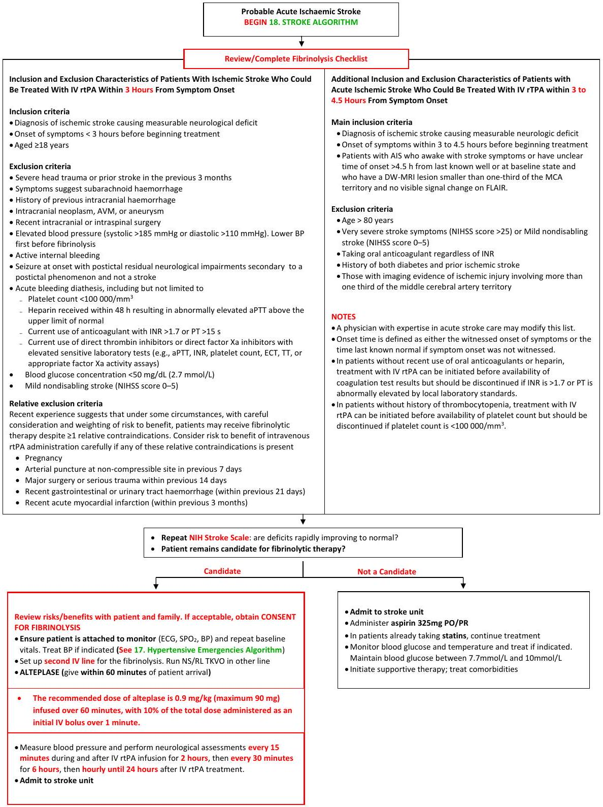
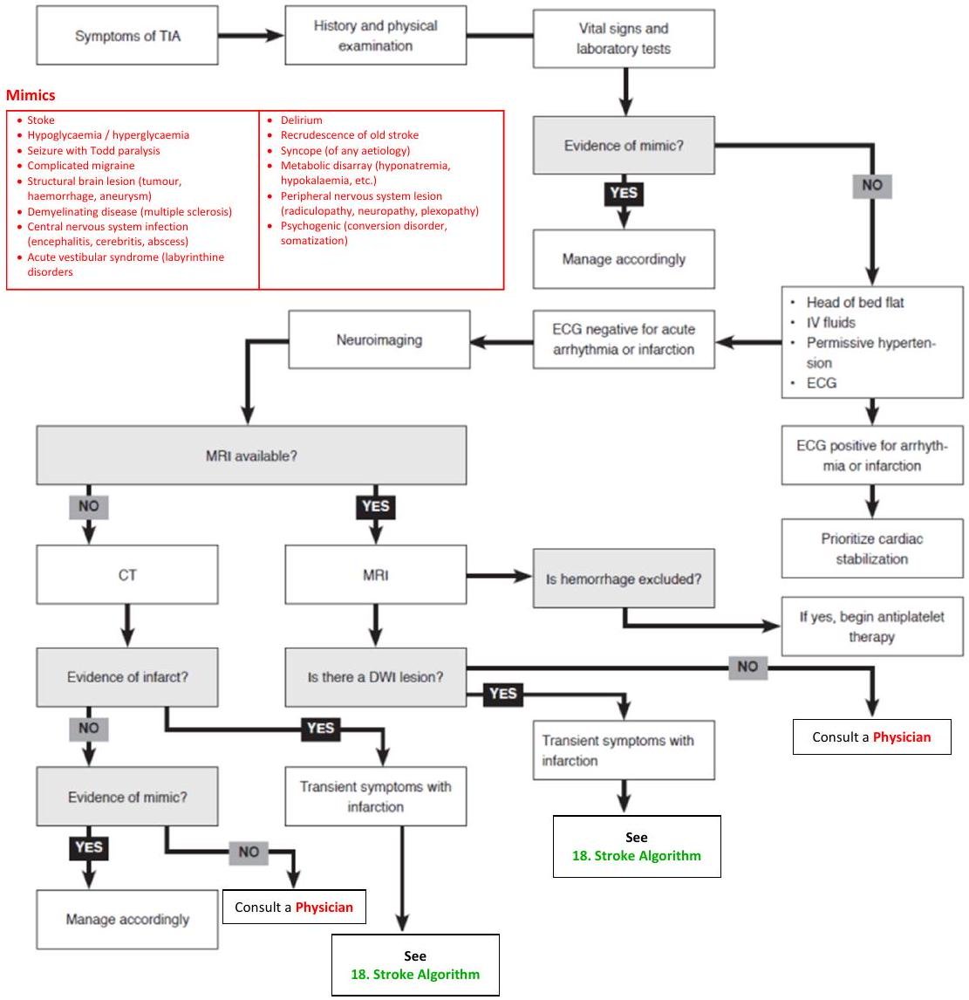
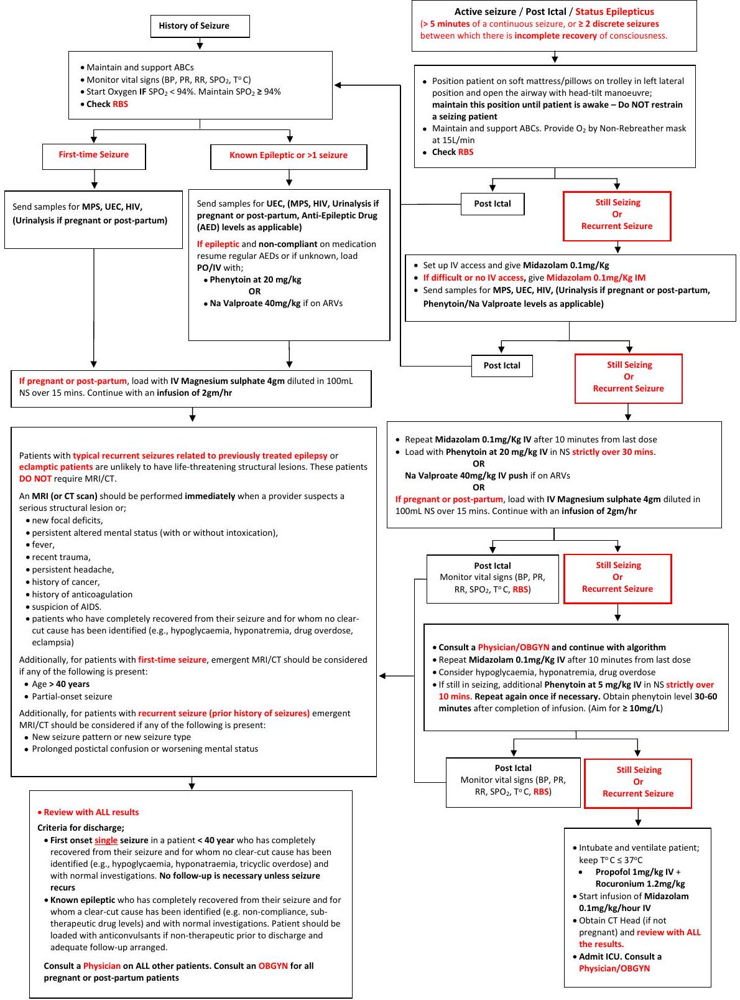
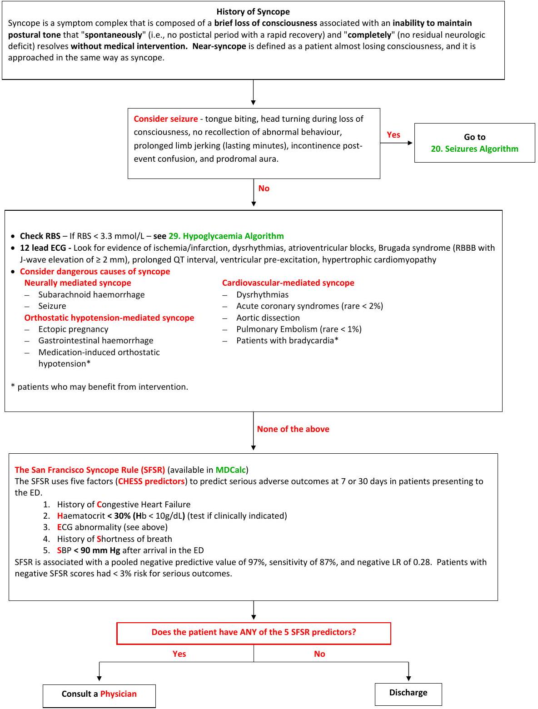
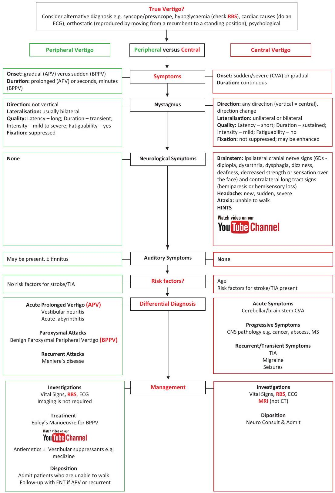

Neurological Emergencies
18. Stroke Algorithm
This clinical pathway is intended to supplement, rather than substitute for, professional judgment and may be changed depending upon a patient's individual needs. Failure to comply with this pathway does not represent a breach of the standard of care.
| Identify signs of Possible Acute Stroke Patient MUST be seen by the doctor within 10 minutes of arrival | |
|---|---|
| Test | Findings |
| Facial Droop: Have patient show teeth or smile | Normal - both sides of face move equally Abnormal - one side of face does not move as well as the other |
| Arm Drift: Patient closes eyes and extends both arms straight out, with palms up, for 10 seconds | Normal - both arms move the same or both arms do not move at all Abnormal - one arm does not move, or one arm drifts down compared with the other |
| Abnormal Speech: Have the patient repeat a sentence | Normal - patient uses correct words with no slurring Abnormal - patient slurs words, uses the wrong words, or is unable to speak |
| Interpretation: If any 1 of these 3 signs is abnormal, the probability of a stroke is 72%. The presence of ALL 3 findings indicates that the probability of stroke is >85% | |
National Institutes of Health Stroke Scale (NIHSS)
(Available in MDCalc)
| 1a. Level of consciousness |
0 = Alert; keenly responsive 1 = Not alert, but rousable by minor stimulation 2 = Not alert; requires repeated stimulation 3 = Unresponsive or responds only with reflex |
7. Limb ataxia |
0 = Absent 1 = Present in one limb 2 = Present in two limbs |
| b. Level of consciousness questions: What is the month? What is your age? |
0 = Both answers correct 1 = Answers one question correctly 2 = Answers both questions incorrectly |
8. Sensory |
0 = Normal; no sensory loss 1 = Mild-to-moderate sensory loss 2 = Severe to total sensory loss |
| c. Level of consciousness commands: |
0 = Performs both tasks correctly 1 = Performs one task correctly 2 = Performs neither task correctly |
9. Best language |
0 = No aphasia; normal 1 = Mild to moderate aphasia 2 = Severe aphasia 3 = Mute, global aphasia |
| 2. Best gaze |
0 = Normal 1 = Partial gaze palsy 2 = Forced deviation |
10. Dysarthria |
0 = Normal 1 = Mild to moderate dysarthria 2 = Severe dysarthria |
| 3. Visual |
0 = No visual loss 1 = Partial hemianopia 2 = Complete hemianopia 3 = Bilateral hemianopia |
11. Extinction and inattention |
0 = No abnormality 1 = Visual, tactile, auditory, spatial, or personal inattention 2 = Profound hemi-inattention or extinction |
| 4. Facial palsy |
0 = Normal symmetric movements 1 = Minor paralysis 2 = Partial paralysis 3 = Complete paralysis of one or both sides |
||
| 5. Motor Arm | LA | RA | Total Score = 0-42 |
| a. Left Arm (LA) |
0 = No drift 1 = Drift 2 = Some effort against gravity |
0 = No drift 1 = Drift 2 = Some effort against gravity |
|
| b. Right Arm (RA) | |||
| 6. Motor Leg | LL | RL | |
Stroke Fibrinolysis Protocol
This clinical pathway is intended to supplement, rather than substitute for, professional judgment and may be changed depending upon a patient's individual needs. Failure to comply with this pathway does not represent a breach of the standard of care.
19. Transient Ischemic Attack (TIA) Algorithm
This clinical pathway is intended to supplement, rather than substitute for, professional judgment and may be changed depending upon a patient's individual needs. Failure to comply with this pathway does not represent a breach of the standard of care.
The AHA/ASA has endorsed the current definition of TIA as "a transient episode of neurological dysfunction caused by focal brain, spinal cord, or retinal ischemia, without radiological evidence of acute infarction." The new definition of TIA completely eliminates the element of time and emphasizes neuroimaging instead.
Abbreviations: CT, computed tomography; DMI, diffusionweighted imaging; ECG, electrocardiogram; ED, emergency department; IV, intravenous; MRI, magnetic resonance imaging; TIA, transient ischaemic attack.
- Complete etiologic workup within 48 hours (Class II)
- Recommend carotid vessel imaging, when appropriate (Class II)
- Disposition to ED outpatient unit, inpatient, or urgent TIA clinic, depending on local resources and institutional standards (Class II)
20. Seizures Algorithm
This clinical pathway is intended to supplement, rather than substitute for, professional judgment and may be changed depending upon a patient's individual needs. Failure to comply with this pathway does not represent a breach of the standard of care.
21. Syncope Algorithm
This clinical pathway is intended to supplement, rather than substitute for, professional judgment and may be changed depending upon a patient's individual needs. Failure to comply with this pathway does not represent a breach of the standard of care.
22. Dizziness (Vertigo) Algorithm
This clinical pathway is intended to supplement, rather than substitute for, professional judgment and maybe changed depending upon a patient's individual needs. Failure to comply with this pathway does not represent a breach of the standard of care.
